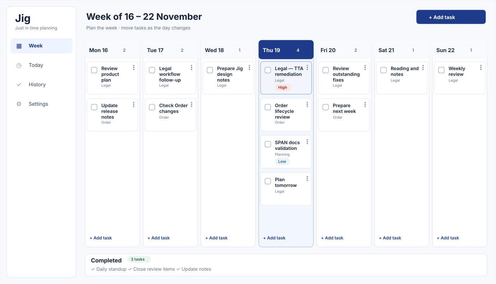
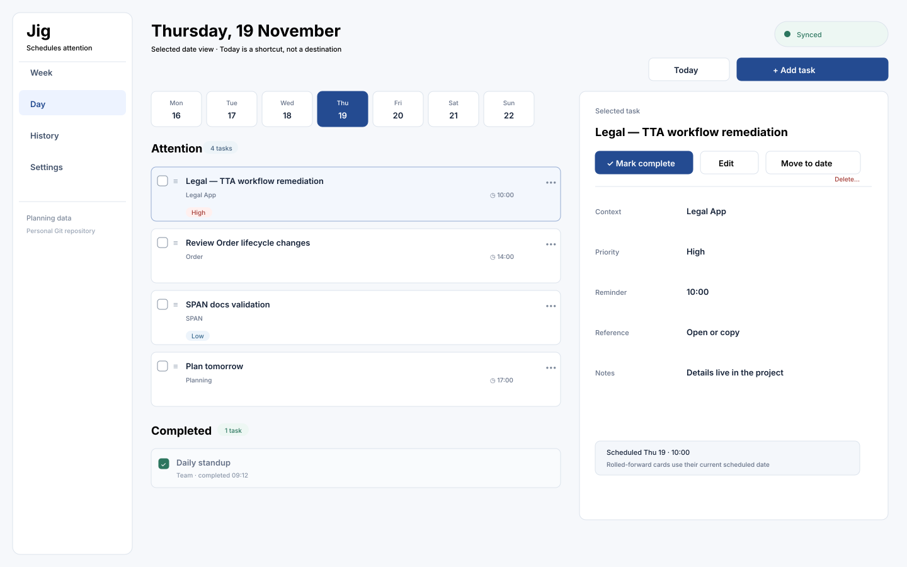
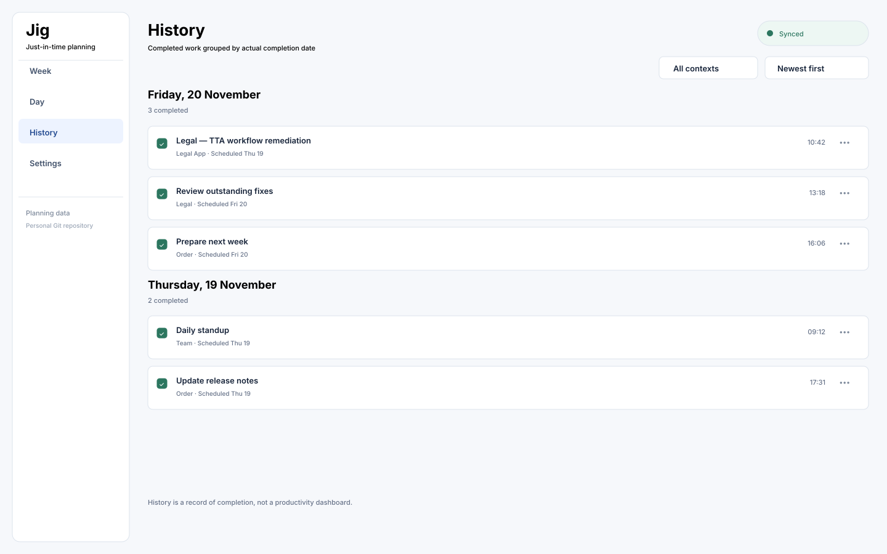
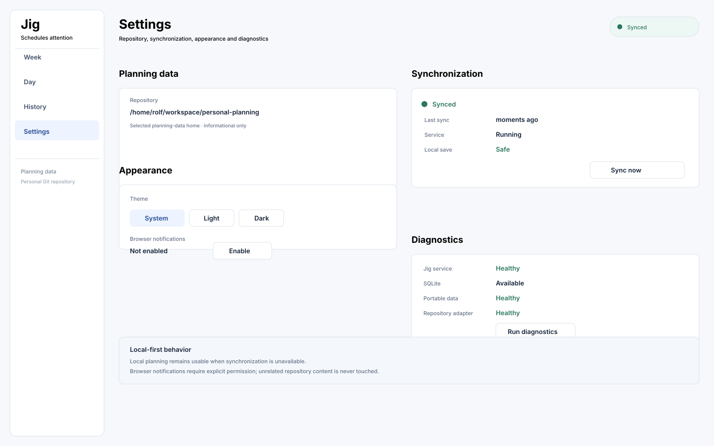
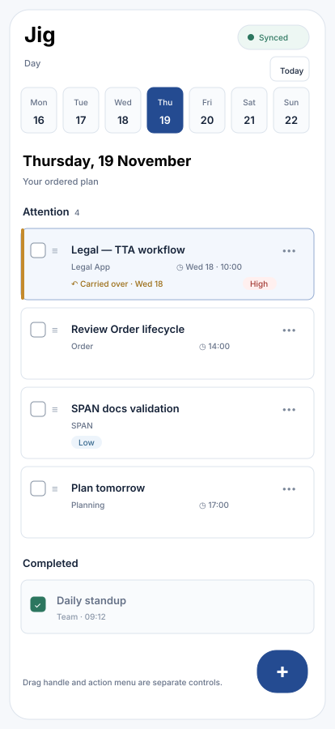
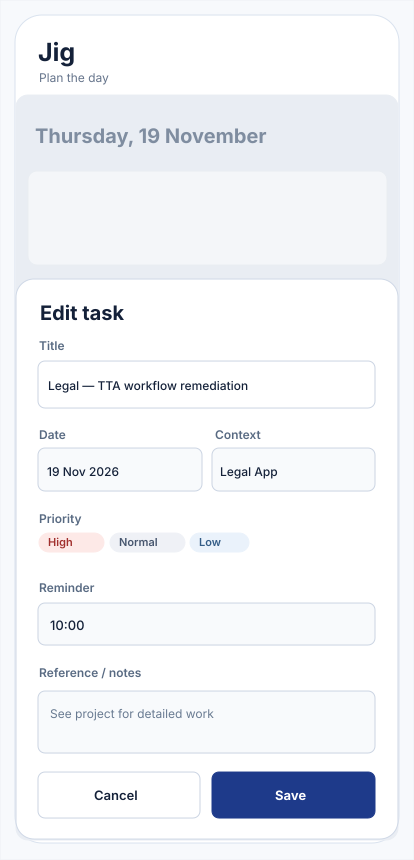
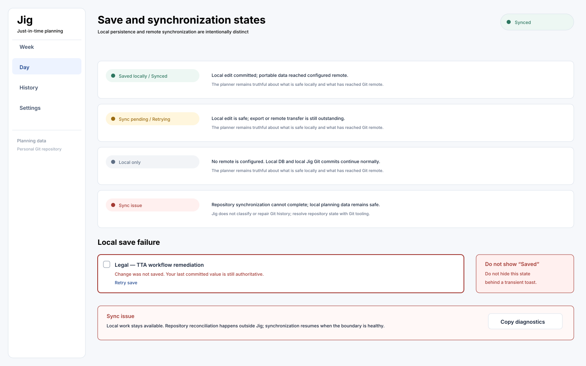

Reference designs derived from the product definition and planning/UX functional contract. Structural reference only; runtime Astryx browser evidence remains the final implementation certification.






